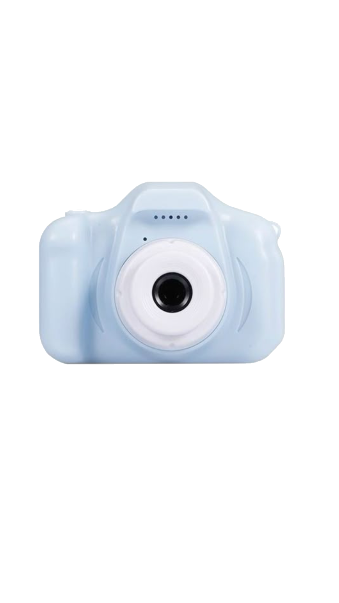
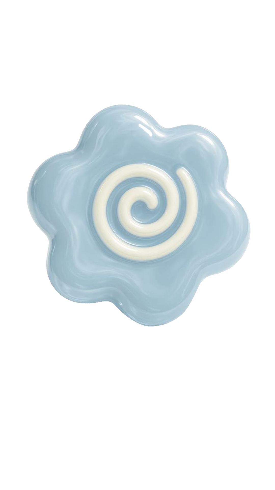
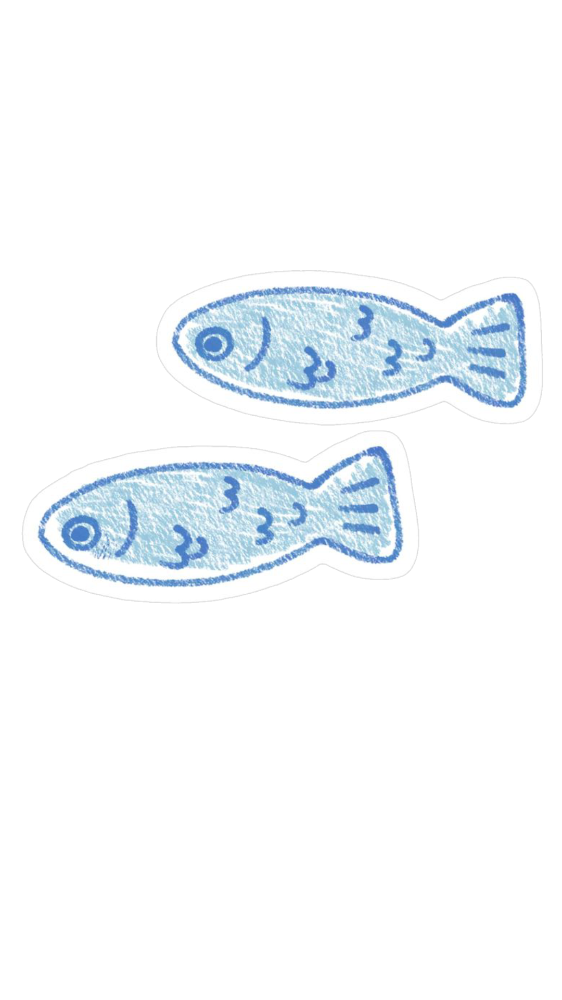

Assalamualaikum wr.wb. Puji syukur kehadirat Allah SWT atas rahmat dan karunia-Nya, saya dapat menyelesaikan laporan praktik ini.
Dalam laporan ini, saya membahas kegiatan praktik yang telah dilaksanakan, mulai alat dan bahan, hingga langkah-langkah kerja.
Saya mengucap terimakasih terhadap Bapak yang telah memberikan bimbingan dan arahan selama kegiatan praktik berlangsung. Saya menyadari bahwa laporan ini masih memiliki kekurangan. Oleh karena itu, saya mengharapkan kritik dan saran yang membangun agar dapat menjadi lebih baik di masa yang akan datang.
Wassalamualaikum wr.wb